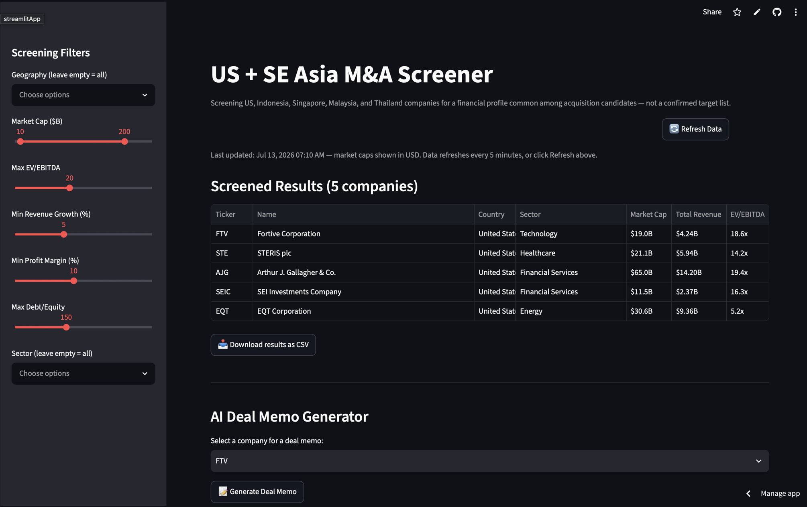
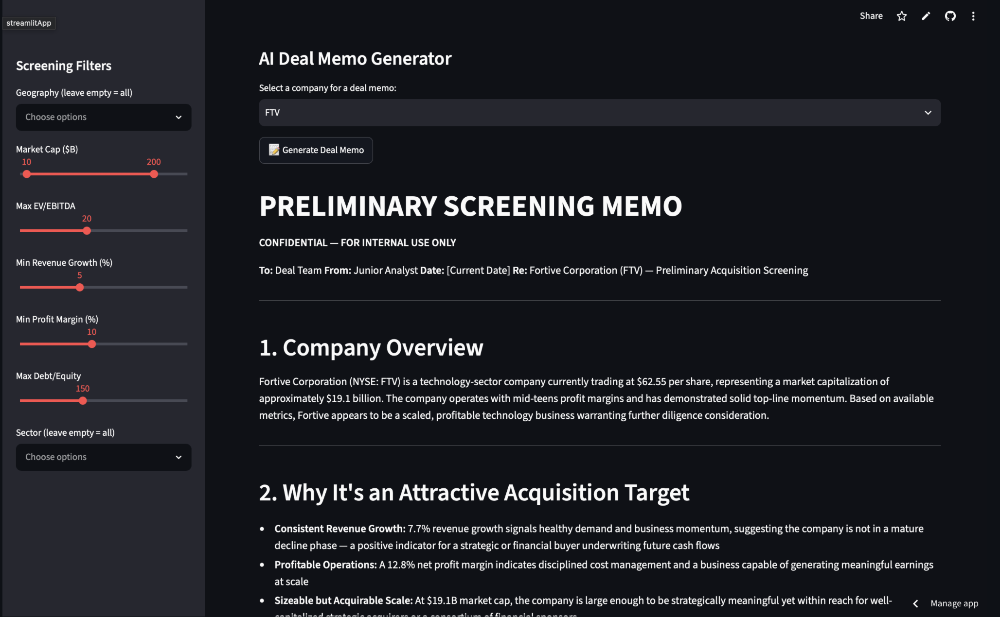

US + SE Asia M&A screener
A cross-border M&A screening tool covering 38 companies across five markets (the US, Indonesia, Singapore, Malaysia, and Thailand), with live FX normalization and an AI-generated deal memo for any company that clears the filters.
- Companies screened38
- Markets5
- Screening factorsEV/EBITDA, growth, margin, leverage, market cap
- Currency handlingLive USD normalization
Why I built this
Most screening tools stop at the US or treat Southeast Asia as an afterthought. I wanted something that covers both on equal footing: screening for companies with a financial profile common among acquisition candidates, with currency-adjusted comparisons so a $2B Indonesian company and a $2B US company are compared in the same terms.
The tool started as a Google Colab prototype and was rebuilt into a modular three-file Streamlit app with FX normalization, CSV export, Claude API deal memo generation, and a public GitHub repo.
What it does
- Screens 38 companies across five markets on market cap, EV/EBITDA, revenue growth, profit margin, and debt/equity at the same time.
- Converts every market cap and revenue figure to USD using live FX rates via yFinance, since Southeast Asian figures come back in local currency.
- Filters by geography and sector, with adjustable sliders for every screening factor.
- Generates a structured preliminary deal memo via the Claude API for any company in the filtered results, covering company overview, acquisition rationale, key risks, and valuation range.
- Exports all screened results as a CSV.
The tool in action


Validation: the AKRA deep-dive
To check the tool wasn't a black box, I took one output, PT AKR Corporindo (AKRA.JK), an Indonesian energy distribution and logistics company, and built a full manual investment memo on top of it, sourced from the company's FY2025 annual report rather than relying on the AI draft alone.
AKRA surfaced with 19% YoY revenue growth, a 7.4x EV/EBITDA multiple, and a net cash position. The process also exposed a data-quality issue I caught and corrected: the data provider reported about 34x debt/equity against the actual ~1.3x from the annual report. The memo also flagged a practical deal constraint: AKR's ownership is concentrated with a controlling family stake, so any real transaction would need negotiated buy-in rather than an open-market approach.
Built with
Python, Pandas, Streamlit, yFinance, the Claude API, and live FX normalization.
Limitations
- Data refreshes every 5 minutes. Fundamentals like EV/EBITDA don't move meaningfully in that window, but live share prices may lag slightly.
- The AI-generated memo is a first-pass draft based only on the metrics shown. It is not a substitute for real diligence, filings review, or comparable transaction analysis.
- "Screened" means a company fits a common financial profile for acquisition candidates, not that it is an actual, confirmed target.